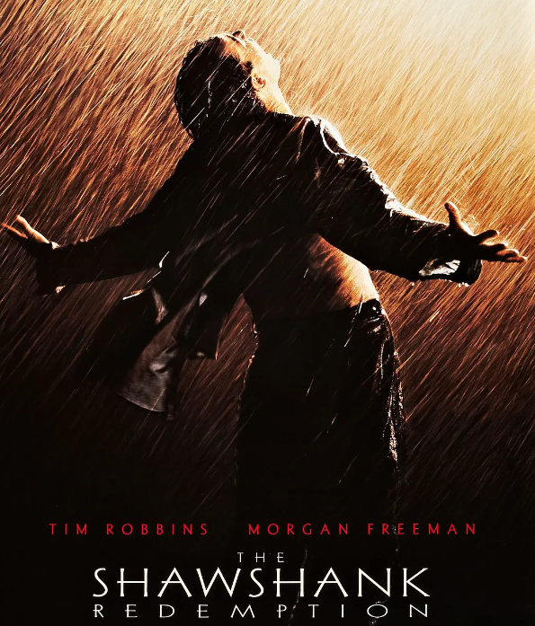
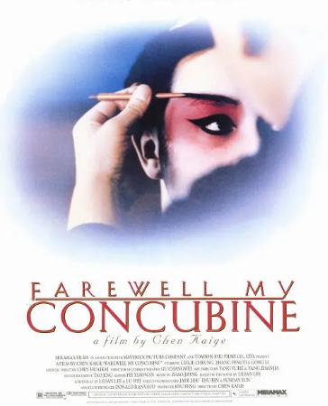
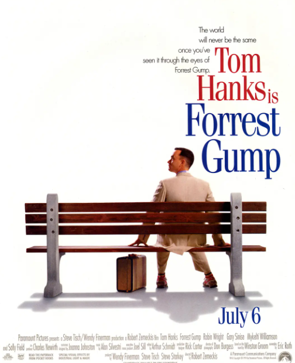
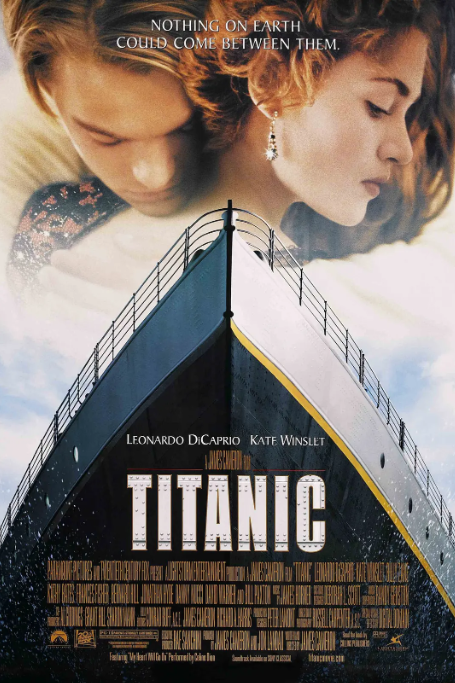
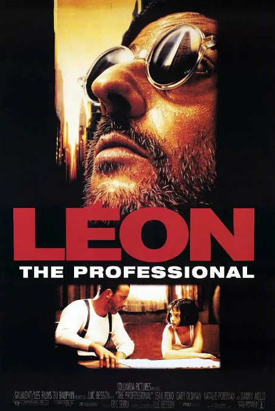
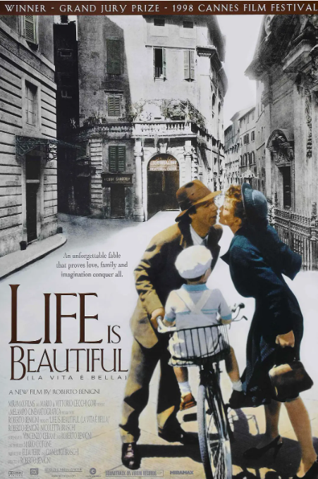
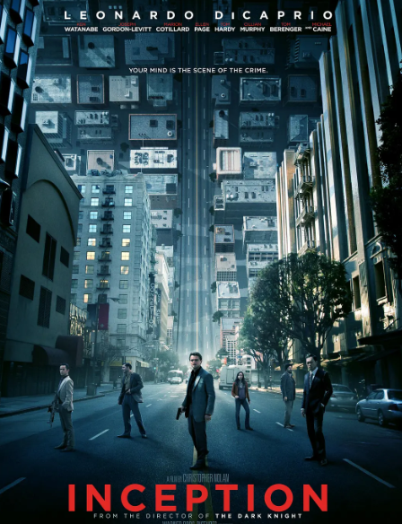
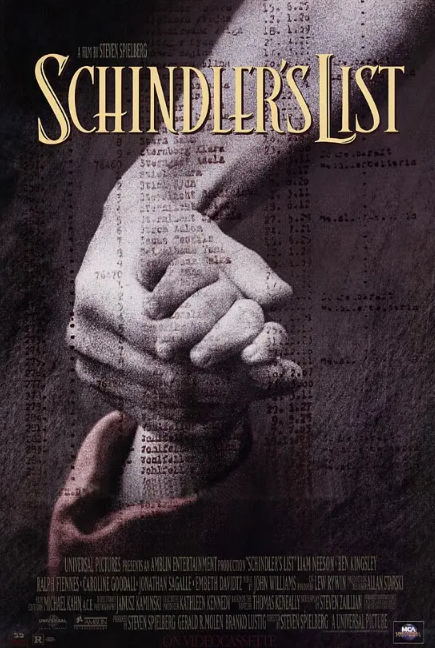

The Shawshank Redemption
Douban Score:9.7
Sotry Introduction:A murder case makes banker Andy wrongly imprisoned. The accusation of murdering his wife and her lover will imprison him for life. His first appearance in Shawshank Prison made prison "big brother" Red look at him differently. Rhett helped him get a stone hammer and a poster of a female star, and the two gradually became friends in adversity. Soon, Andy showed his talent in the prison, serving as the prison librarian, and used his financial knowledge to help the prison officer avoid taxes, which attracted the attention of the warden and was recruited to help the warden launder money.
Farewell My Concubine
Douban Score:9.6
Sotry Introduction:Xiaolou and Cheng Dieyi are a pair of brothers who grew up together. One plays a male role and the other plays a female role. They always work together flawlessly, especially in "Farewell My Concubine". Famous in the capital, the two agreed to co-star in "Farewell My Concubine" for the rest of their lives. However, the two have fundamentally different understandings of the relationship between drama and life. Duan Xiaolou understands that drama is not life, while Cheng Dieyi is indifferent between drama and drama.
Forrest Gump
Douban Score:9.5
Sotry Introduction:Forrest Gump went to school like an ordinary child, and met his lifelong friend and love Jenny. Under the love of Jenny and her mother, Forrest Gump began a life of endless success with the "Scud" given by God. Stop running. Forrest Gump became a rugby superstar, a Vietnam War hero, a table tennis diplomatic envoy, and a billionaire. However, he could never forget Jenny. Several hasty reunions and partings deepened Forrest Gump's longing.
Titanic
Douban Score:9.5
Sotry Introduction:Rose was tired of the hypocritical life in the upper class and was unwilling to marry Carl. She planned to commit suicide at sea, but was rescued by Jack. Soon, the beautiful and lively Rose fell in love with the handsome and cheerful Jack. Jack took Rose to a dance in the lower cabin and took her portrait, and their relationship gradually heated up. April 14, 1912, Sunday night, a calm night. The Titanic hit an iceberg, and the "unsinkable" Titanic faced the fate of sinking. Rose and Jack's budding love will also experience the test of life and death.
Leon: The Professional
Douban Score:9.4
Sotry Introduction:Lyon is a lonely professional killer who is hired by others. One day, the little neighbor girl Matilda knocked on his door and asked to stay with him to avoid the danger of murder. It turns out that the owner of the neighbor's house was an informant of the police anti-narcotics team. He was punished by the police who killed his entire family just because he embezzled a small package of drugs. Matilda was rescued by Lyon, survived, and stayed with Lyon. Lyon taught the little girl how to use a gun, and she taught Lyon French. The relationship between the two became increasingly close and they got along harmoniously.
Sen to Chihiro no kamikakushi
Douban Score:9.4
Sotry Introduction:Chihiro drove to her new home with her parents and accidentally entered a mysterious tunnel on a suburban road - they went to another strange world - a medieval town. The smell of food wafted from the distance. Mom and Dad feasted, but then they turned into pigs! At this time, many strange-looking, translucent people gradually came to the town.
Life Is Beautiful
Douban Score:9.5
Sotry Introduction:Under the fascist regime, Guido and his son were forcibly sent to a Jewish concentration camp. Although Dora had no Jewish ancestry, she walked resolutely and was detained in a concentration camp separately from her husband and son. The smart and optimistic Guido coaxes his son that this is just a game, and the prize is a big tank. His son lives happily and innocently in the haze of the Nazis. Despite the hardship and loneliness of life in the concentration camp, Guido still brought a lot of joy to others
Interstellar
Douban Score:9.4
Sotry Introduction:In an unknown area, former NASA members are still secretly carrying out a plan to save mankind. Many years ago, a mysterious wormhole appeared near Saturn. NASA took the opportunity to send several astronauts to distant galaxies to find habitable planets. Under the persuasion of Professor Brand, Cooper reluctantly said goodbye to his daughter, and he and three other expert professors' daughters, Emilia Brand, Romilly, Doyle take a spaceship to investigate the three most promising planets currently known.
Inception
Douban Score:9.4
Sotry Introduction:Dom Cobb and colleagues Arthur and Nash failed in a dream-stealing operation against Japanese energy tycoon Saito, but was used by Saito instead. Saito coerced and induced Cobb, who was wanted and was in exile overseas, to help him split up his rival's company, taking extreme measures in the deep subconscious mind of his only heir Robert Fisher Plant the idea of giving up the family company and starting your own business.
Schindler's List
Douban Score:9.5
Sotry Introduction:In 1939, Poland was under the rule of Nazi Germany, and the SS segregated the Jews. German businessman Oscar Schindler came to Krakow under German rule and opened an enamel factory to produce military supplies. With his outstanding social skills and a large amount of money, Schindler established a good relationship with the German army. His factory hired Jews to work and made a lot of war fortune.
